01 / Diagnosis
Find the Failure
Test the engine, remove it from the machine, and investigate beyond the initial symptoms.
A complete teardown and rebuild of a seized 23 HP Kohler four-stroke engine used to power a skid-loader hydraulic system. The project began with identifying the failure, then moved through engine removal, internal inspection, component repair, timing, reassembly, and troubleshooting the electrical system to get the engine running again.

Test the engine, remove it from the machine, and investigate beyond the initial symptoms.
Disassemble, inspect, replace both pistons, hone the cylinders, and restore the engine.
Resolve the timing challenge, reassemble the engine, and troubleshoot wiring during startup.
Start with the symptoms, test the engine, and determine whether the problem can be isolated without removing it.
The project began with a Kohler engine that was no longer operating as it should. Before taking the engine apart, I started by investigating the symptoms and testing what I could while it was still installed in the skid loader.
The initial checks helped establish that the issue was deeper than a simple external adjustment. To properly inspect the engine and reach the internal components, the next step was to remove it from the machine.
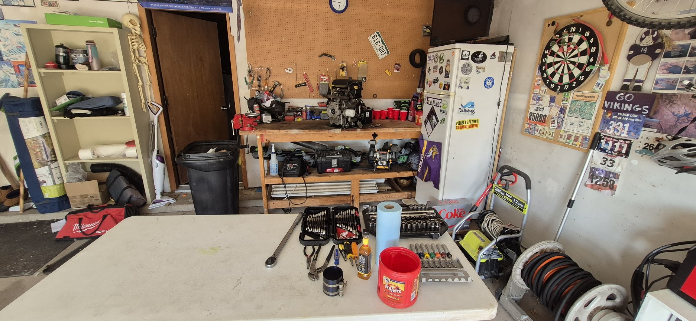
Gain access to the engine and prepare it for a complete inspection and rebuild.
Once the initial checks showed that a deeper inspection was needed, I removed the engine from the skid loader. Taking the engine out made it possible to work around the entire assembly and access components that could not be properly inspected while it was installed.
With the engine removed, I could begin separating the external systems from the engine itself and prepare for a full teardown.
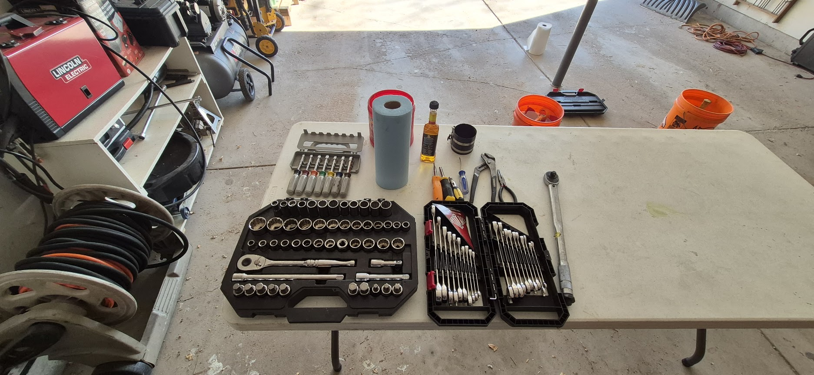
Move from the original symptoms to a closer inspection of the engine's internal condition.
With the engine on the workbench, I could investigate the problem more thoroughly. I began examining the engine as a complete system instead of treating the original symptom as the failure itself.
This meant learning how the individual components interacted, identifying what needed to be inspected during disassembly, and using the engine's service information to guide the inspection and rebuild.
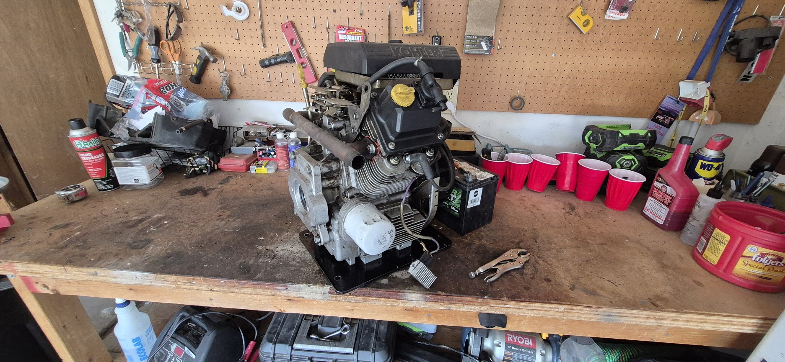
Take the engine apart methodically while learning the purpose and relationship of each component.
I disassembled the engine far enough to inspect the internal components, keeping track of the order in which parts came apart. As I worked through the teardown, I studied what each component did and how the mechanical systems worked together.
I used manufacturer documentation as a reference throughout the process. I also recorded the assembly order, torque specifications, and tightening patterns so that the rebuild could follow a repeatable procedure instead of relying on memory.
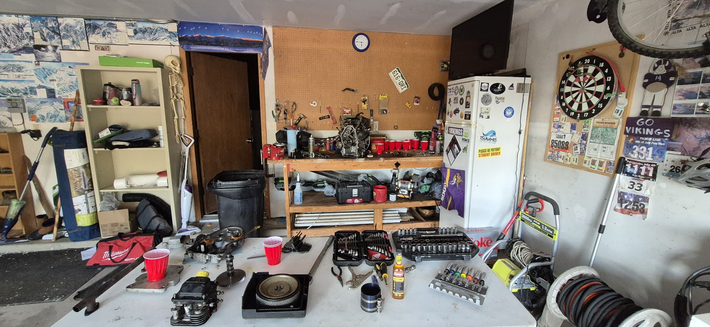
Inspect the piston and cylinder assemblies to determine what needed to be repaired or replaced.
After opening the engine and inspecting the internal components, I identified the piston and cylinder assemblies as the main areas requiring repair. Both pistons needed to be replaced, and the cylinder walls needed to be re-honed before the engine could be rebuilt.
This turned the project from a general engine diagnosis into a more specific mechanical repair: replace the damaged pistons, prepare the cylinder walls, and carefully rebuild the engine around the inspected components.
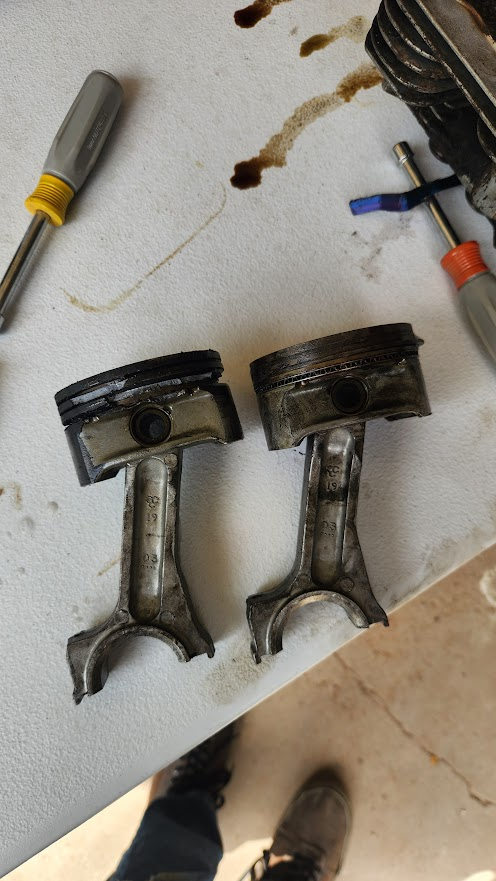
Replace the pistons and prepare the cylinder walls for reassembly.
With the failure identified, I replaced both pistons and re-honed the cylinder walls. This was the core mechanical repair of the rebuild. The cylinder preparation and piston replacement had to be completed before moving into final assembly.
I also cleaned the engine components and prepared the parts for reinstallation, keeping the manufacturer specifications and recorded assembly procedure available for the rebuild.
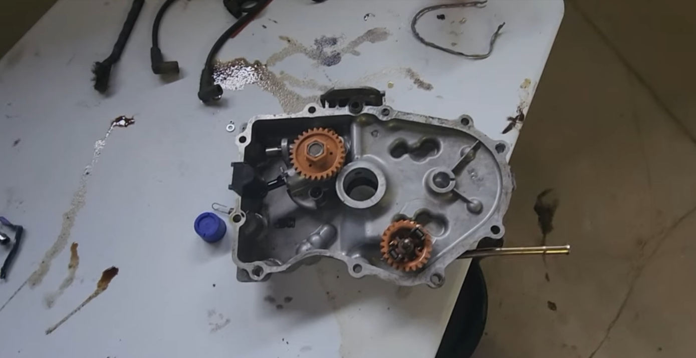
A critical reassembly challenge: the timing gears did not have visible timing marks.
One of the more difficult parts of the rebuild came during reassembly of the timing system. The timing gears did not have visible alignment markings, which made it harder to establish the correct relationship between the gears during assembly.
Rather than guessing at the gear position, I had to study the engine's timing arrangement and use the available manufacturer information to understand how the components needed to align. This was an important step because incorrect timing would prevent the engine from operating properly.
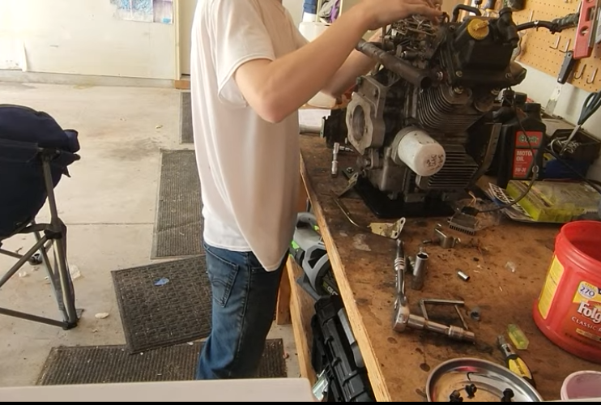
Rebuild the engine in the correct order and follow the documented torque specifications and patterns.
Once the internal repairs and timing work were complete, I began reassembling the engine. I followed the manufacturer documentation and the assembly sequence I had recorded during disassembly.
I used the specified torque values and tightening patterns during assembly. Keeping track of these details was important because the rebuild depended on more than simply getting every component back into place; the parts needed to be installed and tightened correctly.
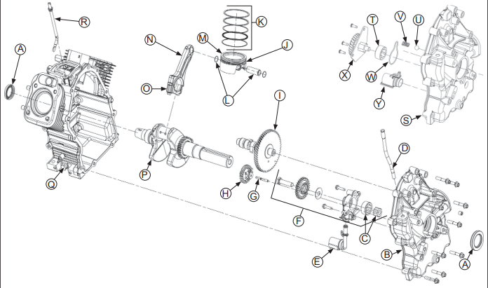
Return the rebuilt engine to the skid loader and work through the problems that appear during startup.
After the mechanical rebuild was complete, I cleaned and prepared the engine for reinstallation, then returned it to the skid loader. The project moved from internal engine work back to integrating the engine with the machine.
Getting the engine running involved more than finishing the mechanical assembly. I also had to work through wiring and electrical problems during the reinstall and startup process. This added another troubleshooting stage after the internal engine repairs were complete.
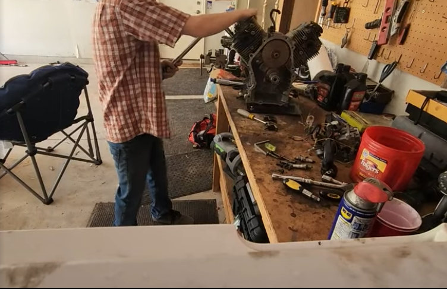
Resolve the electrical issues that remained after the mechanical rebuild.
During the final startup process, wiring problems became another obstacle. I had to troubleshoot the electrical connections as part of getting the rebuilt engine operating again. This required looking beyond the engine's internal mechanical condition and considering the systems needed to start and run it in the skid loader.
The project brought together mechanical diagnosis, engine disassembly, component inspection, machining preparation, timing, torque-controlled reassembly, installation, and electrical troubleshooting.
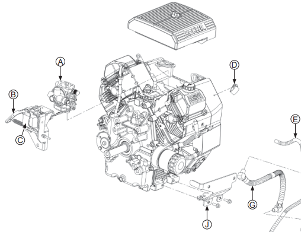
A complete engine rebuild that required both mechanical repair and system-level troubleshooting.
The project took the engine through a complete repair process: initial testing, removal, deeper diagnosis, disassembly, internal inspection, replacement of both pistons, cylinder-wall honing, timing, reassembly, reinstallation, and wiring troubleshooting.
Beyond the repair itself, the project required learning how an unfamiliar engine was assembled and operated, using manufacturer documentation, and recording the procedures needed to put it back together correctly.
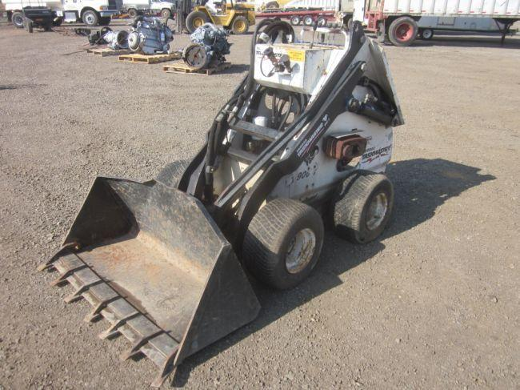